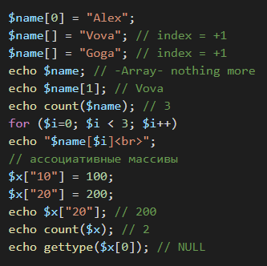
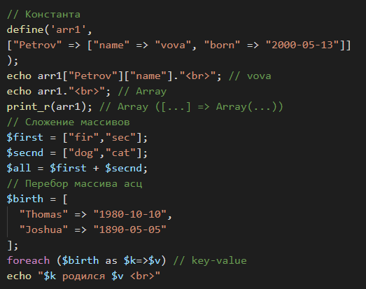
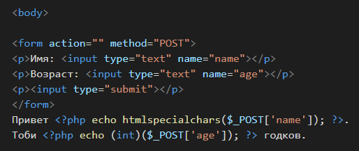

PHP
Привет себе из прошлого. Ты всё ещё ленивый балбес?
Надоело оформлять всё третьесортными декорациями, всё равно они беспонтовые, так ещё и технологии устаревают. Лучше написать конспект по быстрому и успокоиться. Хотя подключил бутстрап с этого сайта.
Оглавление:
- 1. Начало, запуск
- 2. Переменные, действия.
- 3. Базовые конструкции.
- 4. Сценарий в файлах.
- 5. Функции.
- 6. Формы методы.
- 7. Кукис.
- 8. Сессия.
- 9. Файлы иные.
- 123
- 123
- 123
- 123
- 123
- 123
Глава 1. Начало.
РНР нужен как бекенд в веб-разработке. Всё ещё популярен и требуется для поиска работы. Овладеть хотя бы основами.
Ютуб видео по которому я начал обучение. Потребовалась программа опенсервер, создание одного файла index.php, который вроде работает как веб-страница, содержащая и html разметку. В программе опенсервер несколько несложных настроек модулей. Папка с проектом кладётся рядом с программой. Нужная IDE пока не выбрана, делаю vscode.
На этом скрине показан простой код хтмл в php файле, и внутри блока body размещён код для php, открытие и закрытие его блока.
Для запуска проекта надо использовать опенсервер, выбрать список проектов и кликать в созданную папку, у меня C:\downloads\progs\openserver\domains\Prophp. При этом запустится браузерное окно с заголовком Н1 и циклом кубов.
Глава 2. Переменные, операции
Типов переменных девять. Инт дабл бул строка, массив объект что-то ещё.
На этом скрине создаётся переменная строковая. Выводится на страницу браузера. Потом выводится её тип. Потом булевское значение по проверке существования переменной, здесь это 1, а не true. Упсет удаляет переменную. Следующие строки ничего не делают.
Здесь назначается константа. Потом создаётся и выводится массив.
С выводом текста пока не разобрался, частично не работает кое-что.

Апострофы сужают функционал строк.
Двойные позволяют вводить перевод строки, каретки, таб, интерполяцию. Но вот на данном примере у меня перевод строки не работает вообще никак.
Глава 3. Базовые конструкции.
Они все похожи на себя из других языков. Хотя синтаксис не одинаков.
Конкатенация и тернарник.

Условия и циклы. Тут в комментариях уже объяснено. Разобрался с переводом строки, это же по сути всё генерирует хтмл код, поэтому в кавычках можно подставлять форматирование страницы.
Тут не всё понятно. Стрелка в синтаксисе. Содержимое глобалки. Пропустил знак ; но и без него работает, а знак требуется почти везде.
Думал дописать масивы в раздел переменных, но работа с ними достаточно многогранна. Есть ассоциативные массивы, не имеющие индекса для своих элементов и с непонятным перебором.
Foreach для простых массивов принимает as $x или as $k => $v, в первом случае будет значение, во втором мы получаем индекс-значение.
Рандомизатор. И цикл постусловия.
echo date("") параметры передаются строкой, выводит по некоторому форматированию, его тоже можно указать, вариантов несколько и праметров строки, можно найти и изучить подробнее.
Здесь тайм отдал секунды от начала времён, мы записали плюс секунды в неделе. Вывели текущую дату, и дату через неделю.
Задать кодировку, вывести время по формату. Сделали переменную и записали в неё времена минус секунды в сутках.
Глава 4. Файлы сценария.
Require вставляет файл с кодом, верхнюю половину и нижнюю. При отсутствии файла сценарий прекращается. Использованная версия once также проверяет на одиночное включение и не выполняет при повторении. include / include_once работает аналогично, но не прекращает работу при отсутствии файла.
Глава 5. Функции.
Регистр не уникализирует название. Аргументы должны быть получены точным количеством, проверить. Хотя можно сообщать больше, но меньше выдаёт ошибку. Если ранее забыл упомянуть, лучше поздно, чем никогда -- у переменных регистр играет роль в уникальности имени, и наоборот у функции.
Функция создаёт две переменных, одна из них статическая. Такие переменные не уничтожаются по отработке тела функции, и в новом теле вместо создания подключается уже существующая. Тут же отработана проверка, в цикле вызов функции через печать, хотя функция ничего не возвращает, она сама отпечатывает значения переменных. Никакой ошибки при этом не было.
Глава 6. Форма методы.
Самому бы понять. Запись формы в хтмл среде. При нажатии на сабмит задаётся суперглоба _POST. Она принимает пачку с инпутов по их параметру нейм. В пхп рендерится вывод эха, сразу показывая результат к надписям. Метод htmlspecialchars не обязателен, но для какой-то защиты. Инт валидирует ввод числового значения. При исеользовании гет-формы была бы суперглоба _GET. $_REQEST вроде бы тоже записывается, но в обоих случаях, более универсальный. Гет формирует отправку через юрл, поэтому менее безопасный и менее объёмный и прочее, надо изучать в сетевом контексте более вдумчиво.
Эта сверх вселенская переменная выведет содержимое адресной строки.
Вообще ноль понимания. Пересмотреть восьмой ролик. Что-то про передачу данных массивом.
Глава 7. Куки..
И здесь не всё понятно. Код создания кука должен быть до заголовка. А как тогда его удалять, тоже до заголовка или после? Функция создания принимает три параметра - имя, значение, и срок существования. Удаление производится указанием отрицательного времени. Глбалка $_COOKIE должна где-то быть и хранить эти значения в браузере, вероятно, и сама выдавать их. На этом скрине вроде криво.
Тут вроде проще понять. Создаётся каунтер, который принимает куку по проверке или ноль. Увеличивается. Устанавливается в куку имя и значение.
Глава 8. Сессия.

Процесс памяти, хранящий значения до закрытия браузера или может дольше. Глоба принимает и отдаёт значения по названию поля.
Глава 9. Работа с иными файлами.
echo readfile("lorem.txt")
Не особо функционально, просто открывает в буфер и ещё какие-то байты в конце дописывает. Эхо вывело на страницу.
Более функционально. Переменная создана с функцией фопен, которая приняла адрес файла и флаг на чтение. Флаги например R или W. Ор тоже кого-то грохает надписью, незнакомая вообще конструкция. Фрид принимает два параметра, первый и второй. Первый может принять имя файла наверно, второй длину в байтах, тут вроде улучшенного аналога с первого варианта ридфайл. Филесизе определяет длину файла в байтах, чтобы передать фриду точную величину. Фклоз закрывает файл. Всё понятно.
echo fgets($lorem, filesize("lorem.txt"));
Это выводит открытый файл по строкам, и переводит на новую строку что-то.
Вот это работает нагляднее. В отркытом файле есть что-то вроде курсора, и фгетс его двигает. Когда додвигает до конца, функция феоф начнёт возвращать истину. Здесь двигает по 50 байт, выводя в эхо, и после каждой пачки мы ещё выводим 123, получая разграниченный текст на странице. По символам сложнее, может зависеть от кодировки. Лучше не использовать 1, зависает на пропечатывании моей строки, скипая символы файла. При 2 уже печатает один символ через раз. При трёх даёт два символа, формулу уточнить.
В общем, тут ещё надо вникнуть в флаги открытия файла. Конкретно Ссылка на докуметацию по пхп, и там флаги. Но если по скрину, то создаётся указатель на файл для записи с маркером в конец файла, и туда вкачиваем тхт1. Затем открыли другим маркером и вывели. Данного материала почти хватает для широкого функционала перезаписи текстиков.
Глава notExist. --.
Глава notExist. --.
Глава notExist. --.
Глава notExist. --.
Глава X. Темы для собеседований.